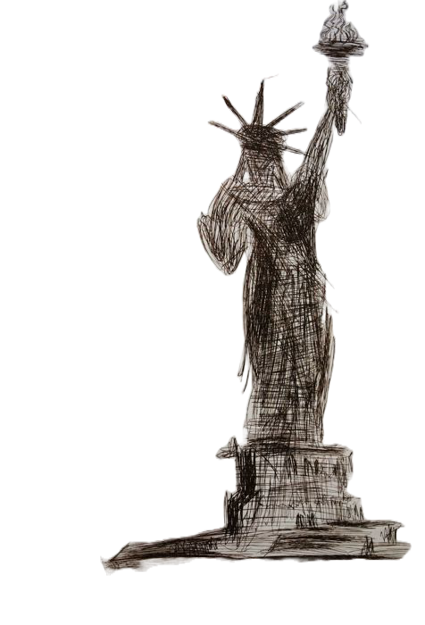
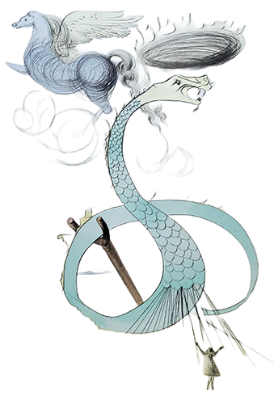
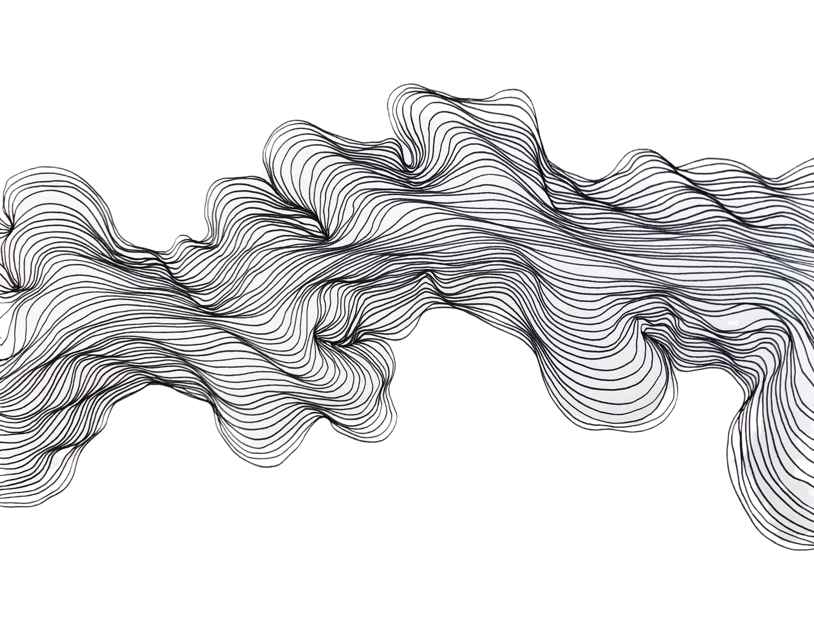
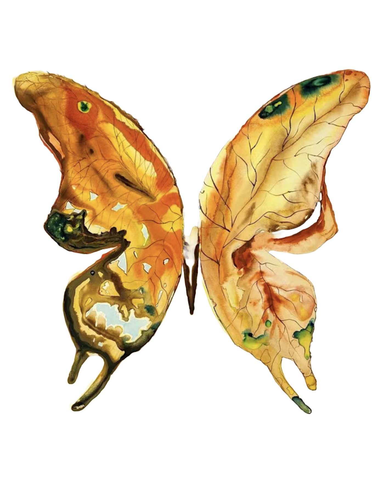

Murdered by
the sky.
Among the forms
that move toward
the snake
and the forms
searching for crystal
I will let my hair grow.
With the
limbless
tree that
cannot sing
and the boy
with the
white egg
face.
With the
broken-
headed
animals
and the
ragged
water of
dry feet.
With all that is tired, deaf-
mute, and a butterfly
drowned in an inkwell.
Stumbling onto my
face, different
every day.
Murdered by the
sky!
“Back From a
Walk”
By Federico García
Lorca & Art by
Salvador Dalí